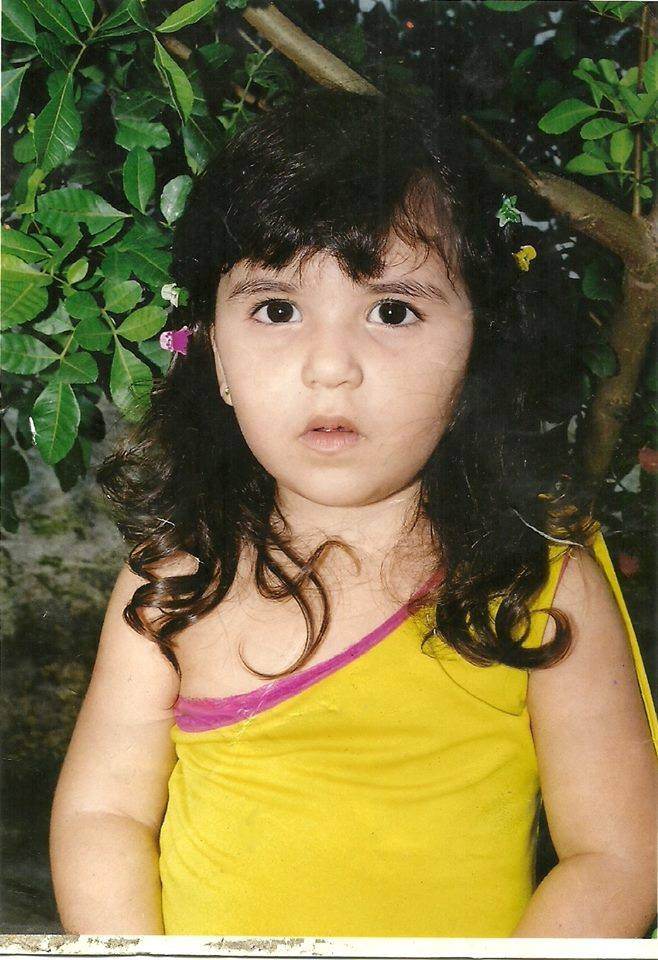
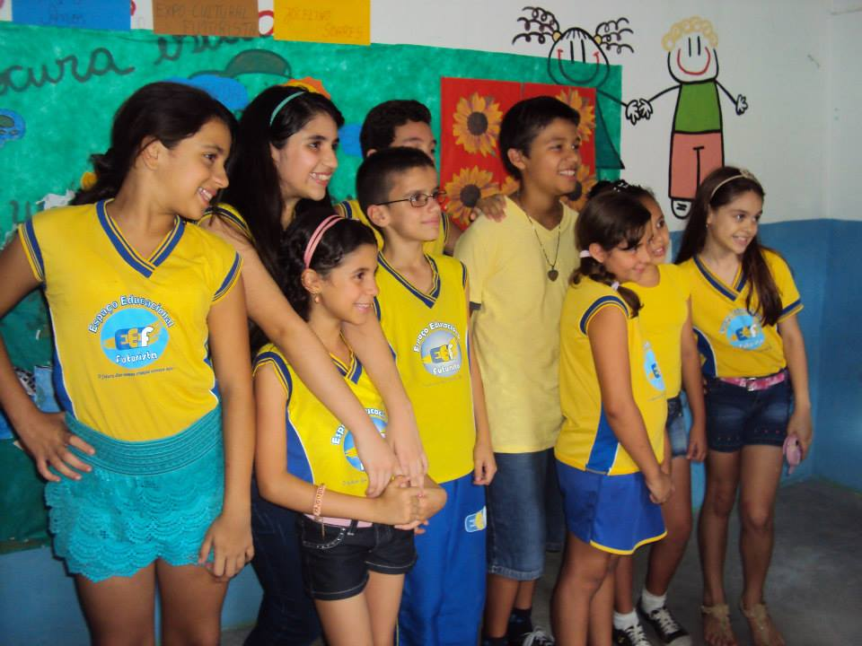
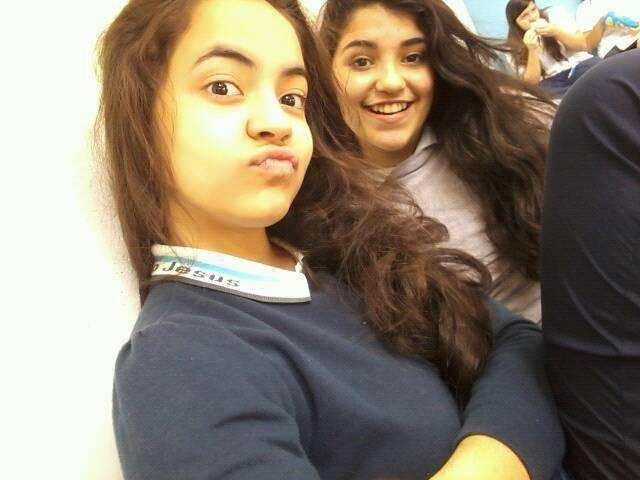

Bem, eu nasci no dia 14 de Janeiro de 2003 no Hospital Santa Clara na cidade de Campina
Grande, na Paraíba, às 8h da noite. Segundo minha mãe, Cláudia Ramalho, não foi uma gravidez fácil, pois
ela foi
diagnosticada com
Diabetes Gestacional. Por esse motivo, teve que seguir uma série de restrições em sua dieta
alimentar, reduzindo qualquer tipo de alimento com quantidades excessivas de açúcar, caso contrário eu
poderia nascer prematura ou com icterícia. Mas, minha mãe sonhava em ter uma filha menina, por isso fez
de tudo para que a gravidez fluisse bem. Obrigada, mãe! Então a família que era só minha mãe, Raiff (meu
irmão) e Reginaldo (meu pai) ganhou uma nova integrante.
Eu sempre fui uma criança que amava brincar na rua, fazer umas comidas de mentirinha com terra, acordar
de 6h para
assistir desenhos, como o Sítio do Pica-Pau Amarelo, A terra dos dragões, Madeline e outros desenhos
nostálgicos. Eu nunca encontrei alguém que tivesse assistido esses desenhos quando era menor, as outras
crianças assistiam outros canais...Mas guardo estes desenhos no meu coração. Prosseguindo, eu tinha
bonecas, colecionava barbies ou bonecas similares as barbies, de 3 reais. Sim, 3 reais. Algumas vezes,
as
coitadas quebravam, mas eu continuava brincando com elas: fazia muletas, cadeira de rodas, elas
tornavam-se minhas favoritas para brincar mais.
Quando eu tinha uns 5 anos, meu pai me ensinou a andar
de bicicleta, teve até uma fase que ele foi ciclista.
Eu cheguei a andar em uma bike enorme para o meu tamanho. Recordo-me que sujei uma calça branca com a
"graxazinha" que soltava da bike. Por falar em meu pai, sempre ia com ele para seu trabalho em Boa
Vista-PB. Ele era eletricista e trabalhava em uma companhia. Eu já cheguei a visitar fábricas de ração
de
gatinhos e de sorvetes com ele. Não, eu não tomei nenhum sorvete (risos), preferi as uvas-passas que se
coloca no sorvete Creme com Passas, então você pode imaginar que eu amo arroz com passas no Natal, né?
Sinceramente, não entendo quem não gosta, mas respeito =D. Ah, eu ia em empresas de fast food também,
quando ele ia
ajeitar algo lá, e lembro que ganhava um Sonho de Valsa de uma moça, e outras comidas, mas o sonho de
valsa é a lembrança mais forte. Sim...Tinha os circos e parques! De frente para a minha casa, tem um
terreno,
onde todo ano era local certeiro para um Parque de diversões ou um Circo. Meu pai ajudava o pessoal a
montar
toda a fiação elétrica e pôr as luzes, em troca ele ganhava ingressos, ou seja, nós ganhávamos! Era
muito bom.
Do maternal até a alfabetização, estudei na escola Ebenézer. Minha mãe começou me ensinar a ler quando
eu tinha 4 anos, então meu processo de leitura foi rápido. Ela era professora da
alfabetização em outra escola. Meu pai dizia que eu poderia
atrapalhar minha mãe se estudasse na mesma turma que ela, então ele sugeriu que eu só fosse para escola
que ela trabalhava depois da alfabetização. Então assim aconteceu, ingressei na escola Espaço
Educacional
Futurista, minha adapatação foi rápida,
pois os meus colegas de classe eram ex-alunos de minha mãe e eu já falava com eles antes. O Futurista,
sem dúvidas, foi
uma escola que mantenho no meu coração para sempre. Até participei de uma Banda Marcial lá! Recordo-me
que participava de muitas apresentações e mostras pedagógicas, isso me ajudou muito em peças e trabalhos
que apresentei nos anos seguintes. Contudo, em 2010 meu pai faleceu. Ele tinha saído para trabalhar em
Boa Vista e na volta teve um infarto o que o fez cair da moto que estava pilotando.
Foi um processo triste para minha família mas buscamos a graça do Senhor, Ele nos consola sempre. Bom,
aprendi coisas com ele que sempre levo comigo até hoje, inclusive o amor por viagens e
fotografias.
A minha vó, Donatila Ramalho, veio morar conosco. A saúde dela não andava tão bem. Mas foram momentos
muito engraçados, de histórias e cuidados que tivemos que aprender a ter com ela. Nessa época, fiz
Ballet no Teatro Severino Cabral, onde participei da peça Alice no País das Maravilhas. Também, fiz
Natação, lembro que eu ficava muito ansiosa para as quartas e sextas e eu nem conseguia dormir porque
iria para piscina no dia seguinte (risos).
Em 2014, fui para uma nova escola onde cursei do 6° até o 9° ano, o Colégio Menino Jesus agora chamado
Ser Ético. Eu tenho muitas
saudades dos professores, e lá aprendi a ter todo um gosto maior por estudos e ver que eu seria capaz de
aprender sobre tudo que nos cerca. Isso é algo que mantenho até meus dias de hoje, tanto que quando
estudo sobre algo que já vi, tenho uma enorme nostalgia sobre aquela época que estudava horas andando
pela casa, tinha tempo para ler meus livros e asssitir Chiquititas!
Nesse período, minha mãe foi diagnosticada com Câncer de mama, então meu irmão e eu cuidamos dela e
enfrentamos
juntos as cirurgias, radioterapias e quimeoterapias. No dia da cirurgia dela, minha vó caiu em casa e
fraturou o fêmur, então ela teve que passar pela cirurgia e deu tudo certo. Mas, ela não resistiu a
recuperação. Esse período não foi fácil, sentimos a perda dela, mas nos confortamos quando
lembramos que ela foi para perto dEle. Tive que aprender a manter as coisas em ordem e ajeitar coisas em
casa, enquanto minha mãe se recuperava. Meu irmão fazia o almoço e as partes mais pesadas, conciliando
com
a universidade.
Bom, minha mãe foi curada, graças a Deus. Ela é minha inspiração e eu a amo muito, por toda sua garra,
força, seus conselhos e por ter me mostrado os valores da vida. Minha relação com meu irmão é
maravilhosa apesar da diferença de 10 anos,
amo muito ele. Raiff é um exemplo para mim. Recordo-me que eu sempre lhe perguntava sobre o porquê do
céu ser azul ou os nomes dos planetas. Ele é meu parceiro no bolo de chocolate, nos cinemas, livros e
nos estudos!
Em 2018, passei para ser aluna do
Curso de Informática, no Instituto Federal da Paraíba. Foi uma seleção
enorme, mas consegui a vaga junto com uma amiga com quem estudava desde o sexto ano. Nossas famílias
ficaram
muito alegres. Eu não sabia o que me
esperava, mas hoje fico muito feliz de aprender coisas sobre programação. Além do mais, conheci pessoas
queridas como meus professores, funcionários e amigos, muitos deles vem de cidades vizinhas
em busca de melhores
oportunidades de estudo, então aprendo muito com eles. Temos momentos de diversão, desespero, choro e
estudo.
Sempre nos reunimos para fazer atividades e estudar para as provas. Atualmente, estou no 2° Ano do
Ensino Médio, participo de projetos na
instituição, busco aprender com a vida, com os erros, as vitórias e espero ter mais coisas para contar,
futuramente.